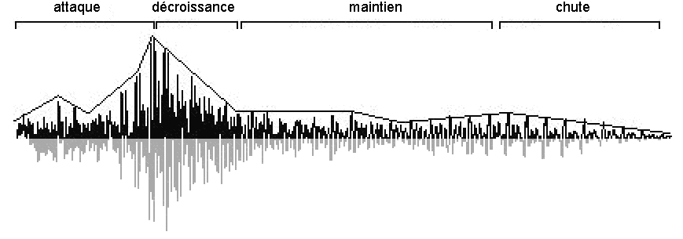
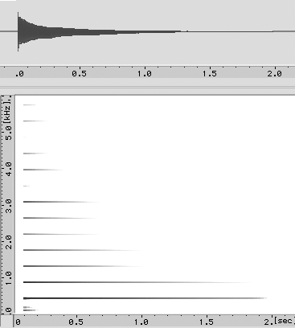

Les paramètres du son
La forme d’onde
Une forme d’onde représente l’évolution de l’amplitude d’un signal au cours du temps. À l’échelle de la milliseconde, elle permet d’observer les oscillations rapides du signal.

La forme d’onde ne permet pas toujours de reconnaître facilement un son. Elle donne cependant des informations sur sa périodicité, son amplitude et son évolution temporelle.
Fréquence et hauteur
Période et fréquence
La période est la durée d’un cycle. La fréquence est le nombre de cycles par seconde :
La fréquence s’exprime en hertz. Une fréquence de 440 Hz correspond à 440 oscillations par seconde.

Hauteur perçue
La fréquence est une grandeur physique ; la hauteur est une sensation. Pour un son pur, plus la fréquence augmente, plus le son paraît aigu.
Pour un son complexe harmonique, la hauteur dépend de l’organisation des partiels (voir TODO). La fondamentale peut même être absente du spectre tout en restant perçue.
Le programme suivant permet de comparer un son harmonique avec et sans sa fondamentale :
À écouter : la hauteur change-t-elle lorsque la fondamentale est supprimée ?
Amplitude et niveau sonore
L’amplitude d’un signal est liée à l’importance des variations de pression. Pour exprimer les niveaux sonores, on utilise le décibel (dB), une unité logarithmique adaptée aux très grandes différences de pression que l’oreille peut recevoir.
Le niveau de pression acoustique est défini par :
Cette formule est donnée pour comprendre la nature logarithmique du décibel ; elle n’a pas besoin d’être mémorisée dans le cadre de ce cours.
| Pression acoustique (Pa) | 0,00002 | 0,0002 | 0,002 | 0,02 | 0,2 | 2 | 20 |
|---|---|---|---|---|---|---|---|
| Niveau (dB SPL) | 0 | 20 | 40 | 60 | 80 | 100 | 120 |


Quelques repères :
- doubler la pression acoustique correspond à environ +6 dB ;
- doubler la puissance acoustique (le niveau sonore) correspond à environ +3 dB ;
- une augmentation de l’ordre de 10 dB est souvent perçue comme un doublement approximatif de la sonie (le volume du son perçu) ;
- en champ libre, doubler la distance à une source ponctuelle fait perdre environ 6 dB.
Ces règles sont des approximations qui dépendent du contexte d’écoute.
L’enveloppe d’amplitude
À une échelle plus longue, on observe l’enveloppe, c’est-à-dire l’évolution générale de l’amplitude du son.

Une enveloppe est souvent décrite par quatre phases :
- attaque (attack) ;
- décroissance (decay) ;
- maintien (sustain) ;
- extinction (release).
Le programme suivant applique une enveloppe ADSR à un son synthétique :
À écouter : modifier l’attaque et l’extinction. Le son évoque-t-il le même type de geste instrumental ?
Transitoires et timbre
Les transitoires sont les parties rapidement changeantes du son, notamment son attaque. Ils jouent un rôle essentiel dans la reconnaissance d’un instrument.
Le timbre ne correspond pas à un paramètre unique. Il dépend notamment :
- du spectre ;
- de l’enveloppe ;
- des transitoires ;
- de l’évolution du spectre ;
- des composantes bruitées ou inharmoniques.
On peut décrire globalement un timbre comme sombre ou brillant selon que l’énergie est davantage concentrée dans les graves ou dans les aigus. Cette qualité ne doit pas être confondue avec la hauteur de la note.
Étude d’un son de guitare
Enveloppe

Forme d’onde

Spectre

Le spectre montre une série de partiels proches de multiples de 440 Hz. Leur amplitude n’est pas identique et évolue au cours du son.
Sonagramme

À retenir
- La fréquence est liée à la hauteur et l’amplitude au niveau sonore.
- Le décibel utilise une échelle logarithmique.
- L’enveloppe décrit l’évolution générale de l’amplitude.
- Le spectre, les transitoires et l’enveloppe contribuent au timbre.